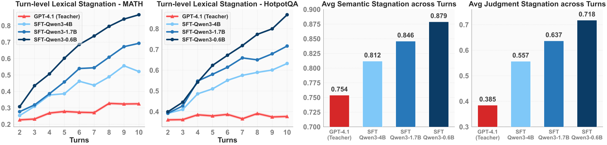

A trainee driver who memorized an expert's route videos does fine until a road is closed, then keeps circling the same block. ProD puts the trainee's own circling next to the expert's detour and scolds harder the longer the circling went on.
숙련자의 주행 영상을 외운 초보 운전자는 길이 막히기 전까지는 잘 달리다가, 막히면 같은 블록만 계속 돈다. ProD는 초보자가 맴돈 기록을 숙련자의 우회로 옆에 나란히 놓고, 오래 맴돌았을수록 더 세게 꾸짖는다.
The failure: small students loop as turns accumulate문제는 턴이 쌓일수록 맴도는 작은 학생
The teacher's repetition stays nearly flat across turns, while every SFT student climbs, and the smaller the student the steeper the climb. Lexical, semantic, and LLM-judge scores agree at r above 0.92.
교사의 반복 정도는 턴이 지나도 거의 평평한데 SFT 학생은 모두 올라가고, 작을수록 가파르게 오른다. 어휘, 의미, LLM 판정 세 가지 점수는 상관계수 0.92 이상으로 일치한다.

- Distill by SFT.SFT로 증류.GPT-4.1 runs 3,000 MATH and 3,000 HotpotQA tasks in CodeAct; successful trajectories train LoRA students.GPT-4.1이 CodeAct 방식으로 MATH와 HotpotQA 문제를 각 3,000개 풀고, 성공한 궤적으로 LoRA 학생을 학습한다.
- Score the student's loops.학생의 맴돌기 채점.One rollout per training question; each turn scores its highest ROUGE-L against earlier turns, and the gap to the teacher's average sets the margin with answer correctness.학습 문제마다 한 번 돌리고, 각 턴은 앞선 턴들과의 ROUGE-L 최댓값으로 채점한다. 교사 평균과의 차이를 정답 여부와 섞어 마진으로 쓴다.
- Contrast, then repeat.대비하고 반복.Push the teacher trajectory above the student's by at least that margin, keep the SFT loss, and rerun with fresh rollouts if a gap remains.교사 궤적이 학생 궤적보다 그 마진 이상 높도록 밀고 SFT 손실도 유지한다. 차이가 남으면 새 롤아웃으로 다시 돈다.
Key point: punish the loop, not the token핵심은 토큰이 아니라 맴돌기를 벌하기
One round of ProD pulls the 1.7B and 0.6B students down by about 0.09–0.10 on the judge score. Decoding-time repetition penalties and shorter teacher demos do not help, and a strong penalty hurts.
ProD 한 번이면 1.7B와 0.6B 학생의 판정 점수가 약 0.09~0.10 내려간다. 디코딩 때 반복 벌점을 주거나 교사 시연을 짧게 줄이는 방법은 도움이 안 되고, 벌점을 세게 주면 오히려 나빠진다.
Results: gains at every size, in and out of domain결과는 모든 크기에서, 도메인 안팎 모두 오른다
Every one of the 8 students improves over SFT in both settings, by 4.3 to 6.4 points out of domain in the rows below. The Qwen3-4B student reaches 70.8 on HotpotQA against the teacher's 71.0.
학생 8개 모두 두 설정에서 SFT보다 좋아지고, 아래 표의 도메인 밖 향상은 4.3~6.4점이다. Qwen3-4B 학생은 HotpotQA에서 70.8점으로 교사의 71.0점에 거의 닿는다.
| Student | ID SFT | ID ProD | OOD SFT | OOD ProD |
|---|---|---|---|---|
| Qwen3-4B | 74.2 | 78.0 | 54.1 | 58.4 |
| Qwen3-1.7B | 62.2 | 67.9 | 41.7 | 48.1 |
| Qwen3-0.6B | 49.0 | 52.7 | 30.5 | 34.9 |
| Llama-3.1-8B | 61.8 | 67.2 | 39.1 | 45.3 |
| Llama-3.2-1B | 35.9 | 41.6 | 20.2 | 25.7 |
| Gemma-3-1B | 28.6 | 33.2 | 16.5 | 21.9 |
When you shrink an agent by distillation, measure how often each turn repeats earlier turns, not just final accuracy, because that is where small students break first. Failed student rollouts make useful negatives if the penalty scales with how badly they looped.에이전트를 증류로 줄일 때는 최종 정확도만 보지 말고 각 턴이 앞선 턴을 얼마나 되풀이하는지도 재자. 작은 학생이 가장 먼저 무너지는 곳이 거기다. 실패한 학생 롤아웃은 맴돈 정도에 비례해 벌점을 주면 좋은 부정 예시가 된다.
The horizon is capped at 10 turns and averages about 4, and the out-of-domain sets stay within math and multi-hop QA. Coding, web navigation, and genuinely long agent runs are untested, and the main table reports no run-to-run spread.상호작용은 최대 10턴, 평균 약 4턴이고, 도메인 밖 평가도 수학과 다중 홉 QA 안에 머문다. 코딩, 웹 탐색, 진짜 긴 에이전트 실행은 시험하지 않았고, 주 표에는 실행 간 편차가 없다.